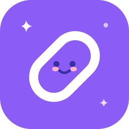

Every link you save,
one click away.
LinkMAX is a clean, simple link manager for Windows. Organize links into categories, open them in your browser with one click — and save any URL from anywhere with a single hotkey.
Everything a link manager needs
No bloat, no accounts, no cloud. Just a fast, tidy home for the links you use every day.
One click to open
Every link shows its favicon, name and URL. Click a card and it opens in your default browser instantly.
Favicons, automatic
Favicons are fetched for every site and cached locally — your grid looks right even offline.
Categories & drag & drop
Group links with colored categories. Drag any link onto a category in the sidebar to move it.
Grid or list, sorted your way
Switch layouts anytime. Sort A→Z, Z→A, newest or oldest — and pin favorites to the top.
Light & dark mode
One toggle switches the whole app — the Windows title bar follows your theme. Your choice is remembered.
Import & export
Import JSON backups or HTML bookmarks from Chrome, Edge and Firefox. Export back anytime.
System tray & auto-backup
LinkMAX lives in your tray while you work. Every quit makes a backup — the last 5 are kept.
Private by design
Everything is stored in a local JSON file on your PC. No account, no sync, no tracking.
Duplicate-safe
Adding a URL you already saved shows a friendly warning — Quick Capture quietly skips copies too.
Save links without even opening the app
Quick Capture is the fastest way to build your collection — it works system-wide, even while LinkMAX sits in the tray.
From your browser, a chat message, a document — anywhere.
Ctrl+Shift+L works globally on Windows, even when the app is closed to the tray.
LinkMAX names it from the domain, checks for duplicates and shows a notification.
Your links belong to you
Bring them in from any browser, take them out in any format — all stored in a plain JSON file on your PC.
Import
Coming from another tool? Import a LinkMAX JSON backup, or export bookmarks from Chrome, Edge or Firefox as HTML — LinkMAX turns every folder into a category and keeps the structure.
Merge or replace, your choiceExport
Export a full JSON backup with categories, or standard HTML bookmarks that any browser can import. Plus an automatic backup on every quit, just in case.
JSON · HTML bookmarks · auto-backupQuestions, answered
Is LinkMAX free?
Yes — completely free and open source under the MIT license. No ads, no accounts, no upsells.
Does my data leave my PC?
No. Links and settings live in a single JSON file at %APPDATA%\LinkMAX\linkmax-data.json. Favicons are downloaded from public favicon services and cached locally. Nothing else is sent anywhere.
How do I move my bookmarks from my browser?
In Chrome/Edge: Bookmark manager → Export bookmarks (HTML). In LinkMAX: Import → pick that file → choose Merge or Replace. Every bookmark folder becomes a category.
Ctrl+Shift+L doesn't do anything — why?
Another app on your PC may own that key combo. LinkMAX automatically falls back to Ctrl+Alt+L, then Ctrl+Shift+K — the active one is shown in the tray tooltip and in the Add Link dialog. Every capture attempt is logged to %APPDATA%\LinkMAX\linkmax-log.txt if you need to troubleshoot.
Where are my backups?
Every time you quit LinkMAX, a copy of your data is written to %APPDATA%\LinkMAX\backups. The last 5 are kept — restore by copying one back over linkmax-data.json.
Does it work offline?
Fully. Favicons are cached on disk, so even your grid looks right without internet. Only the initial favicon fetch needs a connection.